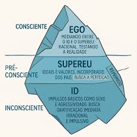

Fenomenologia
O que é?
Estuda as coisas como elas aparecem para nós, sem ideias pré-concebidas.
Edmund Husserl
Criador da Fenomenologia
- Modo como a verdade se revela: Através de fenômenos produzidos por nós.
- Volta às coisas mesmas: Estudar a experiência direta
- Consciência sempre tem um objeto: Sempre pensamos em algo
- Suspender julgamentos: Deixar de lado o que já sabemos
Edith Stein
Discípula de Husserl
- Empatia: Entender o que o outro sente
- Estudo da mulher: O que significa ser mulher
- Relação entre pessoas: Como nos conectamos com os outros
Merleau-Ponty
Fenomenologia do Corpo
- Corpo como instrumento: Conhecemos o mundo através do corpo
- Percepção: Primeira forma de conhecer
- Corpo e mundo conectados: Não somos separados do mundo
Psicanálise (Freud)
O que é?
Estuda a mente inconsciente e como ela afeta nosso comportamento.
Partes da Mente
- Consciente: O que estamos pensando agora
- Pré-consciente: Memórias que podemos lembrar
- Inconsciente: Desejos e lembranças escondidos
As Três Partes da Personalidade
- Id: Desejos e impulsos básicos
- Ego: Parte racional que controla o Id
- Superego: Nossa consciência moral
Ideias Principais
- Complexo de Édipo: Criança sente atração pelo pai/mãe do sexo oposto
- Atos Falhos: Erros que revelam pensamentos escondidos
- Interpretação de Sonhos: Sonhos mostram desejos escondidos
- Pulsão de Vida e Morte: Vontade de viver vs. vontade de destruir
Como Freud via a mente:
Feminismo
O que é?
Movimento que luta por igualdade entre homens e mulheres.
Simone de Beauvoir
Livro "O Segundo Sexo"
- "Não se nasce mulher, torna-se mulher": Ser mulher é aprendido
- Mulher como "o Outro": Sociedade vê mulher como diferente
- Liberdade feminina: Mulheres devem escolher seu caminho
- Crítica ao casamento: Pode ser uma prisão para mulheres
Judith Butler
Teoria do Gênero
- Gênero como performance: Agimos como homem/mulher
- Questiona homem/mulher: Não só duas opções
- Desfazer categorias: Mostrar que gênero é flexível
- Corpos importantes: Alguns corpos são mais valorizados
Ideias Centrais
- Patriarcado: Sistema onde homens têm mais poder
- Interseccionalidade: Gênero, raça e classe se misturam
- União entre mulheres: Mulheres apoiando mulheres
- Autonomia: Mulheres no controle da própria vida